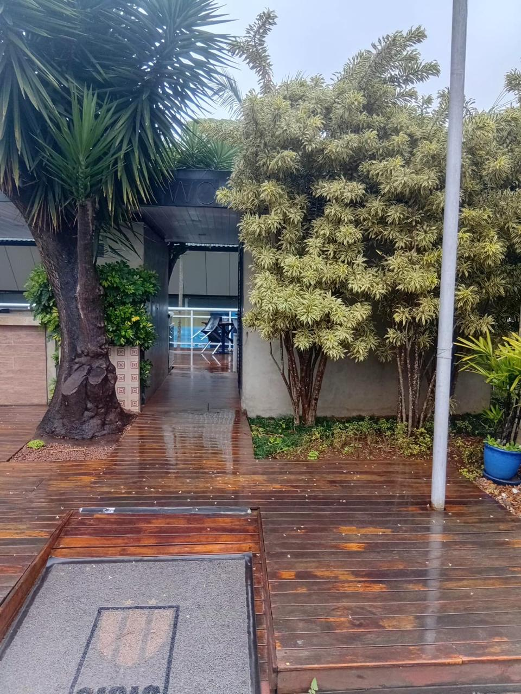
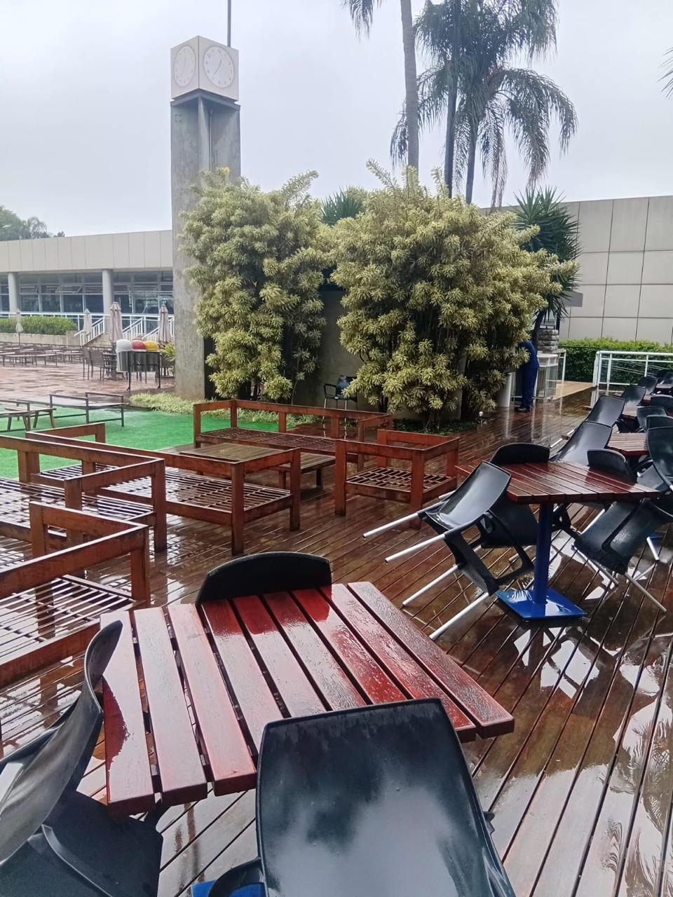
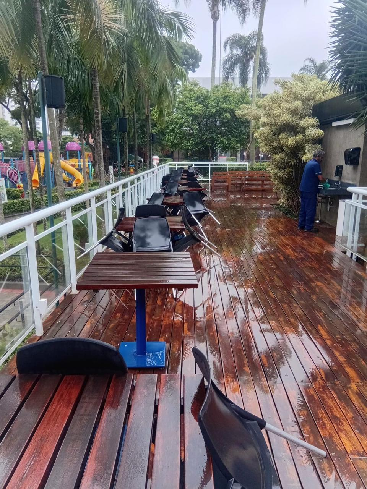
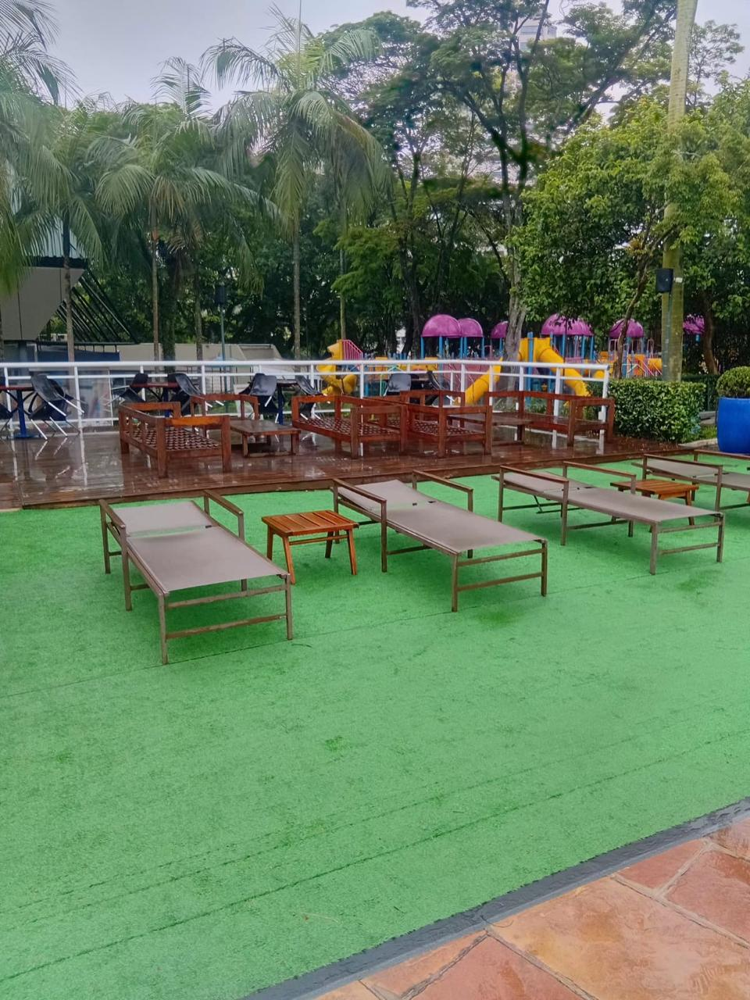
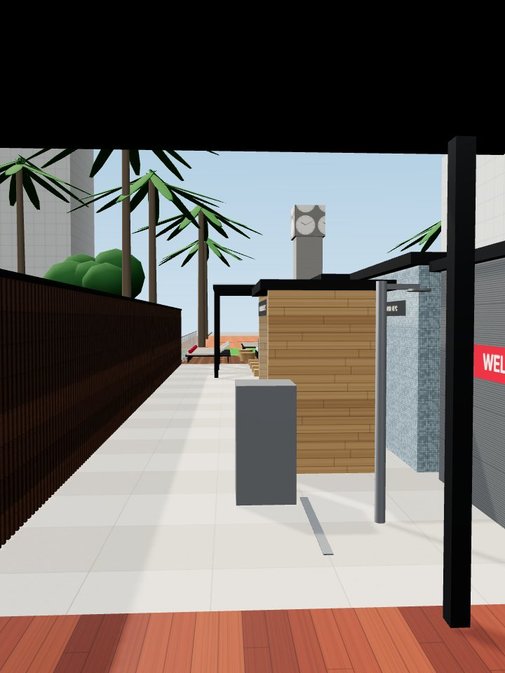

Um circuito de calor, frio e descanso no coração do clube
Transformar o deck subutilizado ao lado da piscina num espaço wellness misto, em traje de banho, com sauna seca, sauna a vapor, banheiras de gelo, duchas de experiência e lounge. Aberto o ano todo, inclusive no inverno.
Uma área parada que pode virar o lugar mais disputado do clube
O deck junto à piscina tem mesas, sofás e espreguiçadeiras usadas sobretudo nos dias de sol. A proposta é dar a ele um uso o ano inteiro, com um tipo de espaço que cresce no mundo todo e que hoje os sócios só encontram fora do clube, pagando por sessão.
Uso o ano todo
Sauna e banho frio funcionam com chuva e no inverno, justamente quando a piscina esvazia. O espaço ocupa o deck nos meses em que ele fica parado.
Convivência, não só saúde
O conceito de "social wellness" (Othership, Bathhouse e, em São Paulo, o Kontrast) troca o bar pela roda de sauna. É um ponto de encontro saudável para sócios de todas as idades.
Possível pioneirismo
A pesquisa não encontrou, em fontes públicas, outro clube social paulistano com circuito de contraste aberto aos sócios. Antes de usar a palavra "primeiro", vale confirmar com os outros clubes.
O local hoje
Fotos enviadas pelo sócio, num dia de chuva. Para o estudo, a área foi tratada como um retângulo de 25 m por 7 m (175 m²), sem teto, mantendo intocados a torre do relógio e o bar.




O que as fotos mostram
- Deck de madeira elevado sobre o nível do playground. A base, laje ou estrutura, não aparece.
- Água e esgoto na pia da parede do bar (foto 3) e no próprio bar; a área da piscina fica ao lado.
- Elétrica nos postes de som e iluminação. A carga nova estimada é de 60 a 90 kW.
- Acessos pela passagem coberta (foto 1) e direto pelo solário da piscina.
- Restrições: relógio e bar intocáveis, palmeiras e iúca preservadas, vista de cima a partir do playground.
O que confirmar na visita técnica
- Levantamento com a posição exata do relógio, do bar, das árvores e dos acessos.
- Laudo estrutural: uma banheira cheia pesa cerca de 1,3 t (600 a 700 kg/m²), acima do usual em terraços.
- Impermeabilização, ralos e caimento sob o deck.
- Pontos de água, esgoto, pluvial e gás mais próximos.
- Capacidade elétrica do clube e distância até o quadro geral.
- Orientação solar, espécies das árvores e rota acessível desde os vestiários.
O circuito de contraste
Os centros mais modernos do mundo organizam a experiência como um ciclo: calor, frio e descanso, repetido 2 a 3 vezes numa sessão de 60 a 90 minutos. O espaço do Sírio segue essa ordem de uma ponta à outra do deck.
Entrada
Armários e ducha de higienização obrigatória antes de entrar.
Calor
Sauna seca de 80 a 90 °C ou vapor a 45 °C, por 10 a 15 min.
Duchas
Balde de água fria, chuveiro de contraste ou cascata.
Frio
Banheira a 5 °C ou a 11 °C para iniciantes, por 1 a 3 min.
Descanso
Lounge por 3 a 7 min, com água e chá. Depois, repetir.
Referências pesquisadas
Dados conferidos nos sites oficiais e na imprensa em 29/10/2026. Preços convertidos pelo câmbio do dia.
Othership
Toronto e Nova YorkSauna de cedro para cerca de 50 pessoas, banheiras de 2 pessoas, aulas guiadas de 75 min. Drop-in de cerca de R$ 234.
othership.usBathhouse
Nova York e FiladélfiaDuas banheiras frias (7 e 10 °C), aufguss 7 vezes por dia, vários níveis de calor. Day pass a partir de cerca de R$ 198.
bathhouse.comLöyly
HelsinqueSaunas de 18 e 22 m² para cerca de 20 banhistas cada, mistas com traje obrigatório e mergulho no mar.
loylyhelsinki.fiThe Ice Bath Club
SingapuraClima tropical como o nosso: sauna de 16 lugares, banheiras de 3 a 6 °C e de 8 a 12 °C, lotação de 30 pessoas.
thesmartlocal.comArc
LondresMaior sauna do Reino Unido, para 65 pessoas, com oito banheiras de 2 pessoas e lounge em anfiteatro.
spaopportunities.comRemedy Place
Nova York, Los Angeles, BostonSuíte comunitária para 10 pessoas com 3 banheiras de gelo, sauna de 10 lugares e vapor. Cerca de R$ 483 por sessão.
remedyplace.comAIRE Ancient Baths
Nova York, Barcelona, LondresCircuito à luz de velas com piscinas de 10 a 39 °C. Mostra o valor do design sensorial e da lotação controlada.
beaire.comKontrast
São PauloRooftop com saunas importadas e banheiras de gelo, mensalidade de R$ 790 a R$ 990. Prova a demanda local.
kontrast.com.brO que é tendência em 2026
- Sauna comunitária grande no centro e várias banheiras pequenas.
- Sessões guiadas com horário marcado, alternadas com uso livre.
- Frio mais gentil, com duas temperaturas, para atrair iniciantes.
- Espaços ao ar livre, ligados à paisagem.
- Lounge de descanso valorizado, sem álcool.
- Higiene profissional da água: filtro, ozônio e troca programada.
Design sensorial adotado
- Luz quente, por volta de 2200 K, baixa e indireta.
- Materiais: madeira termotratada, pedra escura nas duchas, porcelanato antiderrapante R11.
- Som baixo e curado nas sessões guiadas, sem competir com o bar.
- Privacidade com painel ripado que deixa o ar passar.
- Cores do clube em detalhes: toalhas, almofadas e sinalização em vermelho.
Do mesmo ponto de vista
Cada foto atual ao lado da vista 3D da proposta, com a câmera posicionada no mesmo lugar. O ângulo é aproximado: a posição exata dos elementos será ajustada depois do levantamento.

Ande pelo espaço
Gire, veja de cima ou caminhe em primeira pessoa. Toque nos números para ver o que é cada equipamento e quanto custa em cada cenário.
Tour 3D do Espaço Wellness
Funciona no celular e no computador. O modelo tem cerca de 2 MB.
Layout e fluxo do circuito
O fluxo vai da entrada até o lounge: calor, duchas, frio e descanso. Um corredor livre de 1,5 m junto ao guarda-corpo garante a rota acessível (NBR 9050) e a saída rápida.
Capacidade simultânea
Cada pessoa ocupa um lugar por vez e passa a maior parte do ciclo no calor e no descanso. Por isso a lotação confortável é de cerca de 30 pessoas ao mesmo tempo, o mesmo limite do Ice Bath Club de Singapura. Com sessões de 60 min e ocupação média de 40% em 14 h por dia, são cerca de 170 visitas por dia.
Requisitos técnicos considerados
- Acessibilidade (NBR 9050): rota de 1,5 m, ducha acessível com banco, banheira com barra, porta de sauna de 0,90 m.
- Ventilação: entrada de ar baixa e saída alta na sauna seca; exaustor temporizado no vapor; saídas longe do bar.
- Impermeabilização: manta em toda a zona molhada, rodapé de 30 cm e teste de estanqueidade de 72 h.
- Drenagem: ralos lineares nas duchas e banheiras, caimento de 1% a 2%.
- Elétrica: 60 a 90 kW trifásico, quadro dedicado, DR em todos os circuitos e aterramento equipotencial.
- Piso: antiderrapante R11 ou superior na zona molhada.
- Segurança: botão de emergência nas saunas, termostato de segurança, timers, placas de tempo máximo (sauna 15 min, banheira 3 min), contraindicações e atendente no horário de uso.
O que tem no espaço
Os números batem com os pontos do tour 3D e da planta. Os valores mostram o custo dos itens de cada equipamento, sem obra civil, BDI e contingência.
Três cenários, com fontes
Preços pesquisados em 29/10/2026. Todo item diz se o preço é real, com link para a página do vendedor, ou estimativa, com a base do cálculo. Os totais incluem projeto, aprovações, BDI de 15% sobre a obra civil e contingência de 12%.
Comparativo por grupo
Itens detalhados
Importados: preço de origem convertido pela PTAX de 29/10/2026 (US$ 1 = R$ 5,3744; € 1 = R$ 6,00; £ 1 = R$ 7,19), mais frete, II, IPI, PIS/COFINS, ICMS-SP e 6% de despesas aduaneiras. Preços marcados como "Real (busca)" vêm de páginas que bloqueiam leitura automática e precisam de confirmação na cotação formal.
Cerca de 9 meses até a inauguração
Começando em janeiro de 2027, a obra cai no outono e no inverno, fora da alta temporada da piscina, e a inauguração fica para o fim de setembro de 2027. O caminho crítico passa pelas aprovações. No cenário Premium, os importados levam de 60 a 120 dias e são comprados logo depois do projeto executivo.
Semanas contadas a partir da aprovação no comitê. Cores: cinza projeto, marrom aprovações, azul compras, vermelho obra, verde testes.
Quanto custa manter funcionando
Estimativa mensal para o cenário Recomendado, aberto 14 h por dia, todos os dias. Os maiores custos são as pessoas (atendente e limpeza), a água das duchas e a energia das saunas.
O que pode dar errado e como evitar
Estrutura do deck não suportar a carga
AltoLaudo estrutural antes de qualquer compra. Reserva de R$ 60 mil a R$ 100 mil para reforço já está no orçamento. Se for preciso, as banheiras vão para a parte apoiada no solo.
Aprovações demorarem
MédioProtocolar Prefeitura e Bombeiros em paralelo ao projeto executivo, com o AVCB do clube atualizado. O cronograma já reserva 12 semanas.
Câmbio e prazo dos importados
MédioEssencial e Recomendado usam equipamentos nacionais. No Premium, travar o câmbio na compra e exigir assistência técnica no Brasil.
Segurança dos usuários
MédioAtendente no horário de uso, botões de emergência, limites de tempo, termo de ciência e placas de contraindicação (cardiopatas, gestantes, pressão alta).
Higiene da água das banheiras
BaixoDucha obrigatória antes, filtro e ozônio, troca programada da água e registro diário, seguindo a Portaria 1101/2015 da Prefeitura.
Ruído, privacidade e convivência com o bar
BaixoPainel ripado no guarda-corpo, som baixo nas sessões guiadas e regras de uso afixadas. Uso misto em traje de banho, como na piscina.
Próximos passos
- Aprovar o estudo no comitêAutorizar levantamento, laudo e pesquisa com os sócios (cerca de R$ 22 mil).
- Visita técnica e levantamentoConfirmar medidas, posição do relógio e do bar, redes de água, esgoto e energia.
- Laudo estruturalDefinir o que o deck suporta e se precisa de reforço.
- Pesquisa com os sóciosMedir interesse, horários preferidos e disposição para reservar sessões.
- Escolher o cenário e fazer o projeto executivoCom três cotações formais por item.
- Aprovações e obraPrefeitura, Bombeiros, Vigilância Sanitária e execução.
De onde vêm os números
Todas as consultas foram feitas em 29/10/2026. A planilha traz cada link junto do item correspondente.